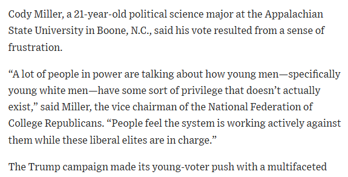

Cody Miller
Home
Media Features
Resume
Portfolio
Contact
Media Features
CAPITAL TONIGHT
GOTV Efforts in North Carolina
Spectrum News
NPR ELECTIONS
Quoted and discussed in this article about rural voters in North Carolina
National Public Radio
WALL STREET JOURNAL POLITICS

Young Voters Helped Fuel Trump’s Win
Wall Street Journal